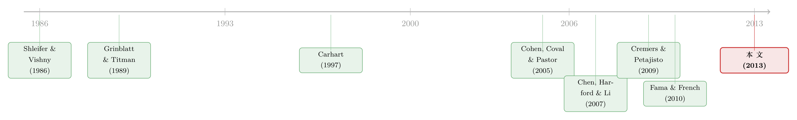

「机构持股越多，并购做得越好」——可这真的是监管的功劳吗？
本文读的是 Nain & Yao (2013, Journal of Financial Economics)：人们长期相信「机构持股 → 更好的并购表现」是机构在「监督」管理层的功劳；但本文用 1990–2006 年 3,988 桩并购证明，这条相关性里相当一部分其实来自共同基金的选股能力——技能更高的基金持有的收购方，并购后表现显著更好，而一旦把基金技能放进回归，传统的「监督」变量就失去了显著性。
1 一条被讲了二十年的因果故事
先讲一个金融学里讲了很多年、几乎成了共识的故事。
过去几十年，机构投资者的持股比例一路攀升。一个自然的问题随之而来：这些手握大量股票的机构，到底是在认真监督 (monitoring) 管理层，逼着公司做对的决策；还是仅仅在「用脚投票」——业绩不好就一走了之？
并购 (M&A) 恰好提供了一块绝佳的检验场。因为并购是公司最重大、也最容易毁灭价值的决策之一，如果机构真的在监督，那它们持股多的公司，应该会做出更「划算」的并购。而一连串研究似乎都在为「监督假说」背书：Martin (1996)、Bae, Kang and Kim (2002)、Kang, Kim, Liu and Yi (2006) 都发现机构持股与更好的并购后表现相关；其中最有代表性的是 Chen, Harford and Li (2007)，他们发现独立的、长期的机构 (independent long-term institutions, ILTI) 的集中持股，与并购后三年更高的买入持有超额收益和更高的资产收益率相关。Gasper, Massa and Matos (2005) 也发现，被低换手率机构持有的收购方，并购后表现更好。
故事讲到这里非常顺：机构在场 → 机构监督 → 管理层不敢乱并购 → 并购后表现好。
但「相关」从来不等于「因果背后的机制是唯一的」。同一条相关性，可能藏着另一个完全不同的解释。
2 一个被忽略的解释：也许它们只是「会选股」
这篇论文的全部张力，就来自一个看似朴素、却被前人系统性忽略的可能：机构持股与并购表现正相关，也许根本不是因为机构在监督，而是因为有些机构本来就「会挑股票」。
想想看：如果一只基金天生擅长选股，它会去买什么样的公司？它会买那些它判断未来会做出价值增值决策的公司——这里面自然就包括那些将来会做出好并购的公司。于是事后我们会观察到：这只基金持有的收购方，并购后表现更好。但这不是因为基金「监督」了什么，而是因为基金一开始就「选对了」。
这两种机制会导出一模一样的相关性，却有着南辕北辙的经济含义。前者说的是「积极所有权」与公司治理，后者说的是「信息与选股技能」。区分它们，正是本文要做的事。
作者把目光锁定在共同基金 (mutual funds) 上，理由很讲究：第一，共同基金占了独立机构持股相当大的一块；第二，已有大量研究表明共同基金几乎不搞股东积极主义——比如 Davis and Kim (2007) 发现典型基金家族在代理投票时基本都顺着管理层投赞成票。换句话说，如果共同基金这种「不爱监督」的机构，其持股技能仍然能预测并购表现，那「监督」就很难再当唯一的解释了。这是一个相当聪明的样本选择：用一类天生不监督的投资者，去剥离掉监督的干扰。
（关于基金到底在「投票」还是在「选股」这条线，亦可参见《同一只股票，两个柜台：基金经理在哪儿下单，泄露了他的「本事」》。）
3 怎么度量「选股技能」——三把尺子与「右尾」的执念
要把「技能」这个抽象的词变成可回归的变量，作者对每一只持有收购方的基金，构造了三个基金层面的技能度量：
Alpha24：基于 Carhart (1997) 四因子模型、用并购公告前 24 个月滚动窗口估计的基金（费前）月度 alpha；Alpha12：同样的四因子 alpha，但只用前 12 个月；CCP：Cohen, Coval and Pastor (2005) 提出的技能度量，核心思想是「基金经理持仓的相似度本身就含有评价其能力的信息」——本质上是用各基金的持仓权重，对 12 个月窗口的四因子 alpha 做一次平滑去噪，从而提高识别选股能力的功效。
这三把尺子都只用了并购公告之前的信息，避免了用结果倒推技能的循环论证。
但真正关键的一步，在于如何把「单只基金的技能」聚合成「这桩交易的技能」。因为一个收购方往往被很多只基金同时持有——样本中中位数的收购方被 39 只基金持有。怎么概括这一群基金的技能水平？
最直觉的做法是取加权平均（作者也算了，叫 Weighted Alpha24 等）。但作者主张，在今天这个基金业里，平均值会系统性地低估信息的存在。原因有二：其一，真正有选股能力的基金已经变得稀缺（Kosowski et al., 2006；Barras, Scaillet and Wermers, 2010；Fama and French, 2010 都指出只有一小撮基金真有技能）；其二，基金交易中存在越来越严重的无信息羊群行为 (uninformative herding)。在「技能稀缺 + 羊群扎堆」的环境里，一群基金的平均特征，远不如这群基金里最顶尖的那几只更能反映信息的存在。
于是作者把度量聚焦在技能分布的右尾：每个季度先把全市场基金按某一技能度量分成四分位，然后数一数——持有某收购方的基金里，有几只落在技能最高四分位？这三个计数变量就是本文的主力 deal-level 度量：Top Alpha24、Top Alpha12、Top CCP。
这个「右尾执念」不是拍脑袋。本文在附录的基金业绩持续性分析里给出了一个很漂亮的不对称证据：技能最高十分位的基金在随后 12 个月有显著为正的业绩，而技能最低十分位的基金随后的负业绩并不显著——也就是说，左尾的「差基金」可能只是运气不好，而右尾的「好基金」是真有信息。既然信息只在右尾，那度量当然该盯着右尾。
中位数的收购方被 39 只基金持有，其中只有 7 只属于 Alpha24 的最高四分位。而这批顶尖基金的技能差距是巨大的：Top Alpha24 基金的平均 Alpha24 是 0.62%（月度），而全样本基金平均只有 0.03%，几乎为零；Top Alpha12 是 0.93% 对 0.06%，Top CCP 是 0.54% 对 0.09%。右尾，确实是另一个世界。
4 识别策略：用「日历时间」量并购后的超额收益
衡量并购之后的表现，本文的主力指标是日历时间超额收益 (calendar time abnormal returns, CTAR)，分别看并购后 6、12、24、36 个月四个时间窗。
做法是：在每个日历月，把当月处于「并购后某窗口期内」的收购方组成一个投资组合，得到组合收益的时间序列，再用 Fama-French 三因子和 Carhart 四因子模型估计这个组合的 alpha。CTAR 相比逐只股票的长期收益法，好处是天然处理了截面相关性——这是 Mitchell and Stafford (2000) 之后长期事件研究的标准做法。
核心检验很直接：把收购方按 deal-level 技能度量分成高低两组，比较两组并购后的 CTAR。结果很干净：
在各个时间窗里，低技能组的收购方 CTAR 倾向于为负，高技能组倾向于为正，且高低组之差显著。以 12 个月窗口为例，
Top Alpha24高于中位数那组的四因子月度 CTAR，比低于中位数那组高出0.374%（每月）。
每月 0.374% 听起来不大，但折成年化就相当可观，而且这是在控制了因子暴露之后的纯 alpha 差异。
为防止结论只是 CTAR 这一种度量的产物，作者又用了两个完全不同的指标做稳健性：（1）买入持有超额收益 (buy-and-hold abnormal returns, BHAR)，按 Lyon, Barber and Tsai (1999) 的标准方法，用并购后 36 个月的买入持有收益减去 Fama-French 规模与账面市值匹配组合的收益；（2）资产收益率 (ROA) 的变化，按 Chen, Harford and Li (2007) 的 AR(1) 残差法剔除均值回归与行业因素。在这两个指标的截面回归里，主力技能度量 Top Alpha24、Top Alpha12、Top CCP 依然显著为正。
5 反转：当「技能」和「监督」同台竞技
到这里，论文已经证明了「技能能预测并购表现」。但聪明的读者立刻会反问：你那个技能度量，会不会只是「监督」的另一种伪装？也许高技能基金恰好就是那些会监督的机构呢？
于是论文最关键的一击来了——让技能和监督在同一张桌子上对决。监督的代理变量沿用 Chen, Harford and Li (2007) 的 ILTI（独立长期机构的集中持股）。作者做了一个方向性很讲究的双重排序 (double sort)：
- 先按
ILTI分组，再在每组里按技能分四分位：结果是，无论在高 ILTI 还是低 ILTI 的组里，收购方 CTAR 都随技能上升——技能的效应在「控制了监督」之后依然存在。 - 反过来，先按技能分组，再在每组里按
ILTI分四分位：结果是，找不到「CTAR 随 ILTI 单调上升」的一致证据——监督的效应在「控制了技能」之后消失了。
更狠的是截面回归里的那一幕：当把 deal-level 技能度量放进 BHAR 和 ΔROA 的回归后，ILTI 与这两个表现指标的关系变得统计上不显著。
这正是全文的「反转」：过去被解读为「机构监督创造价值」的那条相关性，在控制了选股技能之后大幅退场。换句话说，基金的选股技能，在预测并购后股价表现上，盖过了 ILTI 所代表的监督。原来被记在「公司治理」账上的功劳，至少有一大部分该记到「信息与选股」头上。
6 这真的是「选股」吗？三个加固
把功劳从监督手里抢过来还不够，作者还得正面证明这条机制真的是选股，而不是别的什么。论文给了三层加固，环环相扣。
第一，主动性越强的基金，效应越强。 作者用 Cremers and Petajisto (2009) 的 Active Share——衡量基金持仓偏离其基准的程度，是「主动选股」的直接刻画。结果发现，acquirer CTAR 与基金技能的联系，主要由 Active Share 更高的那一批基金驱动。一只基金越是「主动地下与众不同的注」，它的技能就越能预测并购表现——这恰恰是选股故事该有的样子，而不是被动监督该有的样子。
第二，行业里押注集中的基金，信息更准。 用 Kacperczyk, Sialm and Zheng (2005) 的行业集中度指数 (Industry Concentration Index, ICI)，作者发现高 ICI 基金子样本里的效应略强（marginally stronger）——一个在某些行业重仓的基金，可能在那些行业里握有更优的信息，从而更能挑出成功的收购方。这条证据较弱，作者也老实承认。
第三，技能更高的基金持有的公司，更可能「主动」变成收购方。 作者用全体上市公司做了一个 probit 分析：第 t 期 deal-level 技能度量更高的公司，在第 t+1 期更可能宣布收购。这把故事又推深一层——技能高的基金不只是「事后被发现选对了好收购方」，它们似乎能提前识别出那些有能力、有好机会去做并购的公司。基金的技能集合里，包含了「识别好收购方」这一项。
（顺带一提，「谁来替收购方挑选目标、又如何定价」本身也是一条有趣的暗线，可参见《替你估值的人，正在替你「挑」对手》。）
7 文献脉络
把这篇论文放回它生长的两条河流里看，会更清楚它的位置。
第一条河，是「机构监督」的公司治理传统。 理论上，Demsetz (1983)、Shleifer and Vishny (1986)、Maug (1998)、Kahn and Winton (1998) 论证了大股东为何、以及在什么条件下会去监督管理层。实证上，这条线在并购场景里开枝散叶——Martin (1996)、Bae, Kang and Kim (2002)、Gasper, Massa and Matos (2005)、Kang, Kim, Liu and Yi (2006)，直到 Chen, Harford and Li (2007) 把「独立长期机构」与更好的并购后表现牢牢绑在一起。这条河的隐含信念是：机构在场 = 监督在场。
第二条河，是「共同基金选股能力」的资产定价传统。 Grinblatt and Titman (1989, 1992)、Grinblatt, Titman and Wermers (1995)、Daniel, Grinblatt, Titman and Wermers (1997)、Wermers (1997, 2000)、Chen, Jegadeesh and Wermers (2000) 用持仓和费前收益反复证明：至少有一部分明星基金真的会选股。但与之针锋相对的是怀疑派——Jensen (1968)、Gruber (1996)、Carhart (1997) 指出费后净收益上主动基金平均跑不赢被动；Kosowski et al. (2006)、Barras, Scaillet and Wermers (2010)、Fama and French (2010) 进一步用更严谨的统计方法说明：真有技能的基金是稀缺的，信息集中在分布的右尾。

这篇论文恰好坐在两条河的交汇处。它借用第二条河里最新的工具——CCP (Cohen, Coval and Pastor, 2005)、Active Share (Cremers and Petajisto, 2009)、ICI (Kacperczyk, Sialm and Zheng, 2005)，以及「技能集中在右尾」的洞见——回头去重新解释第一条河里那条被认作「监督」的相关性。它对监督派说：你们看到的也许不是治理，而是选股；它对选股派说：选股技能的射程，比我们以为的更远，它甚至能延伸到「替公司挑出好的并购机会」。
8 评论与延伸（Q&A + 研究方向）
(a) 几个可能的疑问
Q：本文是不是把「监督」彻底否定了？
不是。本文证明的是，在共同基金这一类、且用
ILTI度量监督的设定下，选股技能在预测并购后股价表现上盖过了监督。它没有否认其他类型机构（养老金、对冲基金等）的监督作用，也没说监督完全不存在——只是说，过去归给监督的那条相关性，很大一块其实是选股。作者特意选共同基金，正因为它们「天生不爱监督」，从而能干净地把选股效应剥出来。
Q：为什么死磕「右尾」（Top 四分位），而不用更稳的加权平均？
因为附录的持续性证据显示信息是不对称地藏在右尾的：高技能十分位基金随后业绩显著为正，低技能十分位的负业绩却不显著（可能只是运气差）。在「技能稀缺 + 羊群」的市场里，一群基金的平均特征会被大量无信息基金稀释，反而是「这群里有没有顶尖基金」更能反映信息。作者也报告了加权平均度量，发现其预测力为正但更弱——正好印证了这个判断。
Q：CTAR 的差异（12 个月每月 0.374%）会不会只是没控干净的风险暴露？
这是长期事件研究的老问题。作者的防线是三重的：CTAR 本身已经过 FF3 / Carhart 四因子调整；再用 BHAR（规模与账面市值匹配组合）和会计上的 ΔROA 两个机制完全不同的指标交叉验证，结论一致。三种度量同时出错且方向一致的概率不高，但 bad-model 风险无法被彻底排除。
Q：技能高的基金持有 + 公司更可能在 t+1 并购，会不会是反向因果——基金提前听到了并购风声？
有这个担忧。但技能度量全部用公告前的历史 alpha 构造，且 probit 用的是「t 期技能 → t+1 期是否宣布并购」的领先结构。即便基金对个别交易有抢跑，也很难系统性地解释「技能高的基金所持公司整体上更爱并购、且并购得更好」这一横截面规律。更自然的解释是基金识别了「有好机会的公司」。
Q：和「基金能否跑赢大盘」那条经典文献有什么不同？
经典文献问的是「基金自己的组合能不能赚超额收益」；本文问的是「基金的技能能不能预测它所持公司的一项具体公司行为（并购）的后果」。这是把基金技能从『投资组合层面』延伸到了『公司决策层面』，是一种新的、间接的技能验证。关于基金跑赢能力会随持有期『过期』的现象，可参见《「跑赢大盘」是会过期的》。
Q：Active Share 和 ICI 给出的证据强度一样吗？
不一样。Active Share 的证据相当强——效应明确由高 Active Share 基金驱动，与「主动选股」的故事高度吻合；ICI 的证据作者自己用的词是 marginally stronger（仅略强），偏弱。所以「选股」这个机制主要靠 Active Share 撑起来，ICI 只是锦上添花。
(b) 几个可能的研究问题与提案
-
把这套「技能 vs. 监督」的解剖搬到公司债持有人上。 【经济故事】债券型基金、保险公司是公司债的主要持有者。它们对发行人的并购、再融资等决策的「技能预测力」是否也盖过监督？信用市场里，持有人结构对违约与利差的影响，长期也被归因于监督——但也许同样藏着选股（选债）技能。 【可行性】中。需 eMAXX/Lipper 债券基金持仓 + TRACE 交易 + Mergent FISD 发行数据；技能度量可改造为债券基金的风险调整后 alpha。识别上同样面临监督与选股难分的问题，但本文的双重排序框架可直接借用。
-
外资持有人是「监督者」还是「选股者」？ 【经济故事】跨境持股常被解读为外资在施加治理压力。但外资也可能只是更会挑「将做出好决策」的公司。把本文的右尾技能框架用到外资机构上，能为「外资到底带来了什么」这一争论提供新角度（参见《外资真是「蝗虫」吗？》）。 【可行性】中。需 FactSet/13F 拆出外资机构 + 跨国并购样本；难点在为外资构造可比的技能度量与处理国别异质性。
-
被动化浪潮如何侵蚀这条「选股 → 好并购」的链条？ 【经济故事】本文样本止于 2006 年，此后被动指数基金份额暴涨。如果「好并购」靠的是主动基金的选股，那被动化是否意味着这条价值发现链条在系统性地变弱？这对「指数化是否降低了市场信息效率」之争有直接含义。 【可行性】高。把样本延到 2023 年，引入 Active Share / 被动持股比例做交互项即可，数据现成，识别清晰，是一个低悬果实。
-
流动性视角：高技能基金持有的收购方，并购后流动性更好吗？ 【经济故事】如果技能高的基金选中的是「真有价值」的并购，市场对该并购的信息消化应更快、信息不对称更低，事后流动性（价差、深度）可能改善。这把「选股技能」与「市场质量」连了起来。 【可行性】中高。需把 CTAR 换成并购后的流动性指标（Amihud、bid-ask spread），数据可得；难点在分离「并购本身的流动性冲击」与「持有人结构」的贡献。
9 我的判断与参考文献
贡献。 这篇论文最漂亮的地方，不在于发现了什么新数据，而在于它对一条「被讲了二十年、几乎成共识」的因果故事做了一次釜底抽薪式的重新归因。它用一类「天生不监督」的投资者（共同基金）当手术刀，配合「技能集中在右尾」这个精准的度量哲学，把原本与监督纠缠在一起的选股效应干净地剥了出来，并通过 Active Share、ICI、probit 三重加固，让「这是选股」的论断站得相当稳。对公司金融而言，它提醒我们：在解读「机构持股 → 好结果」时，别急着把功劳记到治理头上。
对识别的担忧。 我最在意两点。其一，所有结论都建立在长期股价表现度量上，bad-model 风险（因子模型设错导致的伪 alpha）无法被根本排除，尽管三种度量交叉验证已经做了相当大的努力。其二，「监督被技能盖过」的结论，依赖于 ILTI 是监督的好代理这一前提；如果 ILTI 度量监督本身有噪声，那它在回归里失去显著性，部分可能是度量误差而非机制不存在。换言之，本文有力地证明了「选股重要」，但「监督不重要」这半句话需要更谨慎地读。
后续想看到的。 我最想看的是把样本延到被动化时代之后——如果这条「选股 → 好并购」的链条主要由主动基金撑起，那么在主动管理份额持续萎缩的今天，它是否正在变弱？这不仅是对本文外部效度的检验，更直接关系到「指数化是否在悄悄削弱市场的信息发现功能」这个更大的问题。
参考文献
- Barras, L., Scaillet, O., Wermers, R. (2010). False discoveries in mutual fund performance: measuring luck in estimated alphas. Journal of Finance 65(1), 179–216.
- Bae, K., Kang, J., Kim, J. (2002). Tunneling or value added? Evidence from mergers by Korean business groups. Journal of Finance 57(6), 2695–2740.
- Carhart, M. (1997). On persistence in mutual fund performance. Journal of Finance 52(1), 57–82.
- Chen, H.L., Jegadeesh, N., Wermers, R. (2000). An examination of the stockholdings and trades of fund managers. Journal of Financial and Quantitative Analysis 35(3), 343–368.
- Chen, X., Harford, J., Li, K. (2007). Monitoring: which institutions matter? Journal of Financial Economics 86(2), 279–305.
- Cohen, R., Coval, J., Pastor, L. (2005). Judging fund managers by the company they keep. Journal of Finance 60(3), 1057–1096.
- Cremers, M., Petajisto, A. (2009). How active is your fund manager? A new measure that predicts performance. Review of Financial Studies 22(9), 3329–3365.
- Daniel, K., Grinblatt, M., Titman, S., Wermers, R. (1997). Measuring mutual fund performance with characteristic-based benchmarks. Journal of Finance 52(3), 1035–1058.
- Davis, G., Kim, E.H. (2007). Business ties and proxy voting by mutual funds. Journal of Financial Economics 85(2), 552–570.
- Fama, E.F., French, K. (2010). Luck versus skill in the cross section of mutual fund returns. Journal of Finance 65(5), 1915–1947.
- Gasper, J., Massa, M., Matos, P. (2005). Shareholder investment horizons and the market for corporate control. Journal of Financial Economics 76(1), 135–165.
- Grinblatt, M., Titman, S. (1989). Mutual fund performance: an analysis of quarterly portfolio holdings. Journal of Business 62(3), 393–416.
- Kacperczyk, M., Sialm, C., Zheng, L. (2005). On the industry concentration of actively managed equity mutual funds. Journal of Finance 60(4), 1983–2011.
- Kosowski, R., Timmermann, A., Wermers, R., White, H. (2006). Can mutual fund "stars" really pick stocks? New evidence from a bootstrap analysis. Journal of Finance 61(6), 2551–2595.
- Lyon, J.D., Barber, M.B., Tsai, C. (1999). Improved methods of tests of long-run abnormal stock returns. Journal of Finance 54(1), 165–201.
- Martin, K.J. (1996). The method of payment in corporate acquisitions, investment opportunities, and management ownership. Journal of Finance 51(4), 1227–1246.
- Mitchell, M., Stafford, E. (2000). Managerial decisions and long term stock price performance. Journal of Business 73(3), 287–329.
- Nain, A., Yao, T. (2013). Mutual fund skill and the performance of corporate acquirers. Journal of Financial Economics 110(2), 437–456.
- Shleifer, A., Vishny, R. (1986). Large shareholders and corporate control. Journal of Political Economy 94(3), 461–488.